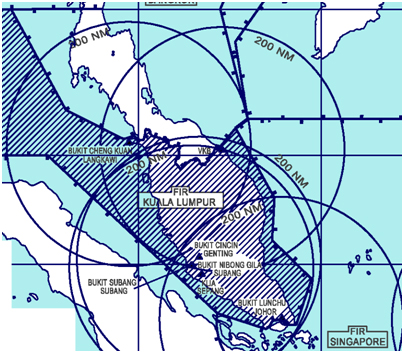
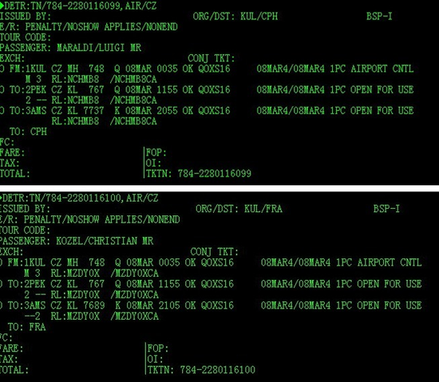
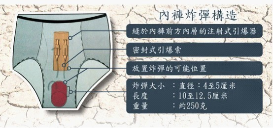

由于马来西亚官方（包括马航和军方）的刻意误导，导致本文的分析是基于错误的信息，从而得出错误的结论。根据13日-15日的新闻报道（主要是美方的报道），俺重新整理了一篇博文《汇总马航客机失踪的最新报道（多半是飞行员劫机）》
上周五发了一篇博文《你意想不到的恐怖主义帮手——昆明暴力袭击事件随想》，不出意料，引发了口水战（当然也包括网评员来捧场）。
很遗憾的是，多数发表反对意见的人采用了“人身攻击”的手法。其实俺很欢迎质疑，但必须是【上档次】的质疑——指出俺博文内容上的错误（比如逻辑谬误、比如论据不足、等等）。“有档次”的质疑，俺是很欢迎滴。而那些只懂得用漫骂的人，显然暴露出发言者自身的局限性（真替这些人捉急）。还有某些留言者体现出非常奇怪的逻辑——因为俺批评党国的民族政策，就说俺是疆独支持者——这大概就是所谓的“中国式逻辑”吧。
在博文的末尾，俺会再次强调一下：【本人的立场是坚定反恐】。而天朝的民族政策其实是帮了恐怖组织的大忙。这会导致长久的，深远的危害，会让每个人都成为受害者。
MH370航班是突然失踪的，当时的情形如下：
1、失踪的是波音777客机，机长是老手，50多岁，18,365小时的飞行经验。
2、失踪的时候，并没有出现恶劣的天气。
3、失踪时，已达到巡航高度，处于自动驾驶状态。
4、驾驶员【没有】发出 Mayday（表示“致命紧急”的求救信号），也【没有】用应答机发出表示危险的代码（7500代表劫机、7700代表故障）。
5、飞机上的ELT（应急定位发射机）也【没有】发出信号。这个装置是自动工作，无需驾驶员干预。如果飞机坠海，ELT 遇水就会自动发报。
6、“一次雷达”和“二次雷达”的信号都突然中断（一次雷达就是常见的反射式雷达，能看到飞机本身；另外，民航客机上都装有自动应答机，会自动发出信号报告飞机的位置、高度、速度，这些信号会被二次雷达接收到）
从上述几点来看，很多可能性都可以排除掉。
排除机械故障
首先，这款波音机型的口碑不错——还从来【没出】过明显的机械事故（之前韩亚航空在旧金山出的那次事故，是飞行员误操作，不是机械事故）。
其次，即使出现机械故障，以当时的飞行高度，掉到海面上也需要几分钟。这意味着：飞机驾驶员有足够的时间发出求救信号。就算飞行员不发出求救信号，自动应答机也会继续工作。就算飞行员故意关掉应答机，地面上的一次雷达也还能监控到飞机的位置。
所以，“一次雷达”和“二次雷达”信号中断，说明不太可能是机械故障。
（下图是出事区域的雷达覆盖图）

排除劫机
如果发生劫机，驾驶员同样有足够的时间发出求救信号。
而且 9.11 之后，飞机驾驶仓的门都经过特殊加固，即使用手枪也难以打开。
所以劫机犯不太可能在发出求救信号前，就迅速制服驾驶员（除非驾驶员是劫机犯的同谋）。
就算驾驶员是劫机犯的同谋，把应答机关闭，也只能中断“二次雷达”的信号。但依然无法解释“一次雷达”的信号中断。
而且就算驾驶员的劫机犯同谋，也难以解释 ELT 没有自动发出信号。
所以，不太可能是劫机。
排除飞行员误操作
一方面，机长是老手；另一方面，当时飞机已经到达平流层，而且进入自动驾驶状态。所以不太可能是飞行员误操作。
就算飞行员出现误操作，导致飞机失速并坠海，也无法解释“一次雷达”的信号中断。
多半是“空中解体”
考虑到驾驶员没有发出求救信号，而且雷达信号突然中断，这多半说明飞机直接在空中解体。
只有这样，才能解释“一次雷达”和“二次雷达”的信号都中断。
当飞机解体之后（如果解体得非常彻底），那么“一次雷达”就无法捕捉到目标；而且解体之后，应答机也自然无法工作，导致“二次雷达”也收不到信号。
排除“天气原因”
之前曾经有过民航客机因为被闪电击中，而空中解体（比如1971年的秘鲁民航）。但MH370航班失踪时，飞机所在的海域没有出现恶劣的天气。
另外，BBC引用英国民航专家说：波音777的结构很坚固，即使遭遇雷击和机舱失压，依然能保持飞行。
所以不太可能是“天气原因”导致空中解体。
“空中解体”的可能原因
排除闪电导致的“空中解体”之后，还有如下几种可能性会导致飞机在空中解体：
飞机上有【爆炸装置】被引爆
飞机【被击落】
俺觉得第一种可能性更大（接下来会分析理由）。
目前已经证实有两名乘客采用失窃的护照登机。失窃的护照分别来自意大利和奥地利，分别于2012年和2013年失窃。失窃的地点都在泰国。
两名假冒者都是从南方航空购票。根据票号表显示，二人的票号相邻（说明两人是同时购票）。两人的行程前两段完全一致，均从吉隆坡出发，经北京至阿姆斯特丹，之后航程不同，一人前往哥本哈根，一人前往法兰克福。
（下图是两人的票号）
 这俩张护照都没有在马来西亚的中国使领馆办过签证。
从上述情况可以分析出：
1、
同时购票并且前2段行程一致——说明这俩人可能是一伙的。
（后来有新的报道：两张机票是在泰国旅行社购买，买主是某个伊朗人）
2、
从“没有在中国使领馆办签证”来看，既可能是普通偷渡客，也可能是恐怖分子。
如果是普通偷渡客
因为仅仅是在北京转机，只要不出机场，滞留不超过72小时，不用签证。
如果是恐怖分子
既然搞自杀袭击，就更不用签证了。
3、
已经有多个报道提到吉隆坡国际机场的安检很差。所以不论是偷渡客还是恐怖分子，都倾向于选在这里登机。
提醒一下：
就算今后的调查证实了这两个人确实是普通偷渡客，从逻辑上也【不能排除】恐怖袭击的可能性（俺后面会提到）。
坐过飞机的同学都知道，过安检的时候要核对照片。那么冒用护照的人是如何混过机场安检的？
1、可能性之一：买通机场的安检
俺觉得这种可能性不大。
2、可能性之二——安检太松
如果机场安检太松（没有仔细核对护照持有人的照片），那么就可以蒙混过关。
貌似很多网友都说马来西亚的安检很粗糙。
3、可能性之三——采用某种技巧混过安检
已经有网友总结了第三种方法，可以蒙混过关。大致方式是：
虽然911之后，各国都加强的机场的安检。美国机场的安检更是严厉。但恐怖分子依然想出办法把炸药带到飞机上——比如2009年圣诞节期间，美国发生了的“内裤炸弹事件”。所幸恐怖分子被机组人员和乘客制服，炸弹没有引爆。
前不久看到新闻说，基地组织已经发明了一种改良版的“内裤炸弹”（构造图如下）。这种新型炸弹的威力更强，而且机场安检难以发现。
 （报道在“这里”）。
2月份还发生了两件看似巧合的事情：美国政府连续发布了两次安全预警——都是针对民航的恐怖袭击：
首先，2月5日，美国国土安全部发布预警，警告民航要小心恐怖分子采用“牙膏炸弹”
其次，2月19日，国土安全部再次发布预警，警告民航要小心恐怖分子采用“鞋子炸弹”
（相关报道在“这里”）
时间上如何接近，内容上又密切相关，让人不禁产生联想。
还有另一个诡异的事情：出事的前一周，马航股票被大量卖空。（相关报道在“这里”）
从逻辑上讲，有两种可能：其一，纯属巧合；其二，有人知道马航要出事，提前卖空股票套利。目前马航官方还没有对此作出答复。如果此事属实，俺不相信仅仅是巧合。
除了恐怖分子的自杀爆炸，也有可能是飞机被外部的武器击落。
这又分两种情况：
1、被周边国家的军方击落
民航史上曾经发生过这种案例（比如：南韩航班被苏联战斗机击落，伊朗航班被美国军舰击落）。
2、被恐怖分子击落
早在80年代苏联入侵阿富汗期间，伊斯兰圣战组织就获得了单兵对空导弹（赫赫有名的“毒刺”导弹）。到了911之后，塔利班和基地组织肯定又搞到了更高级的防空武器。
不过捏，俺觉得这种可能性【小于】“恐怖分子自杀爆炸”的可能性。原因如下：
1、对于恐怖分子而言
即使掌握防空武器，但要击落飞行在平流层的航班，还是稍微有些难度的。相对而言，用自杀袭击的方式把炸弹带到飞机上，成功率更高。
2、对于周边国家的军方而言
在主观上不会去击落民航客机（这种做法无疑是政治自杀）。
当然也存在因为操作失误，不小心把航班击落。但如果是这样，无法解释马航股票提前被卖空。
再联系到美国方面的两次反恐预警，俺觉得“军方击落”的可能性比较小。
航班失联之后，曾经有个报道说：某自称“中国烈士旅”的恐怖组织声称对此事负责。不过懂行的人分析说，搞“疆独”的恐怖组织从来不自称“中国人”。
因为这几天没有恐怖组织出面承认，某些读者怀疑“恐怖袭击”的可能性。俺的分析是：恐怖袭击之后，恐怖组织未必会【立即】承认。比如911之后，基地组织并没有【马上】承认是他们干的。一直拖到2004年，本拉登才公开承认是他们干的。
综合上述的种种迹象，俺觉得：用“自杀袭击”炸机的可能性比较大。而且从策划的手法和所在的地区来看，基地组织脱不了干系。因为东南亚一直有基地组织的分支在活动，民众当中也有基地组织的支持者（可能很多人不知道，其实马来西亚和印尼都是伊斯兰教国家）。而且911之后，东南亚发生过几次基地组织策划的恐怖袭击（比如2002年的巴厘岛爆炸案）。
对于美国国土安全部的预警，俺猜测有一种可能是：美方已经得到了某种模糊的情报（知道基地组织要炸飞机，但不知道具体的航线），所以2月份连续发布两次预警。但是因为最近几年，基地组织对民航的袭击都没有得手（美国本土有好几起袭击未遂被破获），所以很多民航公司对这两次预警没有引起重视。
众所周知，基地组织的大本营在阿富汗和巴基斯坦。各位不妨看一下地图，这两国都跟新疆接壤。而且这3个地方，宗教上具有相似之处——都是伊斯兰教为主，而且都是逊尼派，民风也都比较彪悍。
正是因为这种相似性，很多年以前，基地组织就开始对新疆进行渗透。比如2002年的时候，联合国就把新疆的“东突伊斯兰运动”定性为“基地组织的分支”（BBC的相关报道在“这里”）。
由于基地组织的渗透，所以对新疆的民族政策一定要非常慎重（下面会提到）。
再次罗嗦一下：俺反对任何形式的恐怖主义。对恐怖组织一定要严厉打击。正因为要彻底打击恐怖组织，所以才需要采用【更高明的】民族政策。“高明的民族政策”要做到这种效果：既要打击恐怖组织，又要缓和民族矛盾。这样才能瓦解恐怖组织的群众基础，让恐怖组织无法发展、无法扩大规模。
而如今党国治理新疆，采用的手法是【简单粗暴式】——只知道用“高压维稳”，把几乎所有的维族人都列入嫌疑对象，统统打压。另外，党国的维稳系统甚至可能采用【养贼邀功式】来谋取“权”和“钱”（具体请看《你意想不到的恐怖主义帮手——昆明暴力袭击事件随想》）。
长此以往，只会激化新疆的民族矛盾，加剧维族人的离心倾向。因为“高压维稳”会让越来越多的维族人转向激进，也会让更多的维族人转向暴力反抗——而这正是基地组织希望看到的。一旦演变成这种局面，基地组织就会在新疆发展壮大，那么天朝的每一个省份都可能遭遇恐怖袭击（到时候你会发现，“昆明事件”只是小儿科）。
非常讽刺的是：当年的911事件，国内竟然有很多脑残的网民力挺本拉登。有必要提醒大伙儿：【很多时候，敌人的敌人并不是朋友】
俺博客上，和本文相关的帖子（需翻墙）：
你意想不到的恐怖主义帮手——昆明暴力袭击事件随想
关于本·拉登的几个误区
每周转载：关于西藏日益频繁的自焚事件(5篇)
★先插播一段题外话
上周五发了一篇博文《你意想不到的恐怖主义帮手——昆明暴力袭击事件随想》，不出意料，引发了口水战（当然也包括网评员来捧场）。
很遗憾的是，多数发表反对意见的人采用了“人身攻击”的手法。其实俺很欢迎质疑，但必须是【上档次】的质疑——指出俺博文内容上的错误（比如逻辑谬误、比如论据不足、等等）。“有档次”的质疑，俺是很欢迎滴。而那些只懂得用漫骂的人，显然暴露出发言者自身的局限性（真替这些人捉急）。还有某些留言者体现出非常奇怪的逻辑——因为俺批评党国的民族政策，就说俺是疆独支持者——这大概就是所谓的“中国式逻辑”吧。
在博文的末尾，俺会再次强调一下：【本人的立场是坚定反恐】。而天朝的民族政策其实是帮了恐怖组织的大忙。这会导致长久的，深远的危害，会让每个人都成为受害者。
★飞机突然消失时的情形
MH370航班是突然失踪的，当时的情形如下：
1、失踪的是波音777客机，机长是老手，50多岁，18,365小时的飞行经验。
2、失踪的时候，并没有出现恶劣的天气。
3、失踪时，已达到巡航高度，处于自动驾驶状态。
4、驾驶员【没有】发出 Mayday（表示“致命紧急”的求救信号），也【没有】用应答机发出表示危险的代码（7500代表劫机、7700代表故障）。
5、飞机上的ELT（应急定位发射机）也【没有】发出信号。这个装置是自动工作，无需驾驶员干预。如果飞机坠海，ELT 遇水就会自动发报。
6、“一次雷达”和“二次雷达”的信号都突然中断（一次雷达就是常见的反射式雷达，能看到飞机本身；另外，民航客机上都装有自动应答机，会自动发出信号报告飞机的位置、高度、速度，这些信号会被二次雷达接收到）
从上述几点来看，很多可能性都可以排除掉。
排除机械故障
首先，这款波音机型的口碑不错——还从来【没出】过明显的机械事故（之前韩亚航空在旧金山出的那次事故，是飞行员误操作，不是机械事故）。
其次，即使出现机械故障，以当时的飞行高度，掉到海面上也需要几分钟。这意味着：飞机驾驶员有足够的时间发出求救信号。就算飞行员不发出求救信号，自动应答机也会继续工作。就算飞行员故意关掉应答机，地面上的一次雷达也还能监控到飞机的位置。
所以，“一次雷达”和“二次雷达”信号中断，说明不太可能是机械故障。
（下图是出事区域的雷达覆盖图）
排除劫机
如果发生劫机，驾驶员同样有足够的时间发出求救信号。
而且 9.11 之后，飞机驾驶仓的门都经过特殊加固，即使用手枪也难以打开。
所以劫机犯不太可能在发出求救信号前，就迅速制服驾驶员（除非驾驶员是劫机犯的同谋）。
就算驾驶员是劫机犯的同谋，把应答机关闭，也只能中断“二次雷达”的信号。但依然无法解释“一次雷达”的信号中断。
而且就算驾驶员的劫机犯同谋，也难以解释 ELT 没有自动发出信号。
所以，不太可能是劫机。
排除飞行员误操作
一方面，机长是老手；另一方面，当时飞机已经到达平流层，而且进入自动驾驶状态。所以不太可能是飞行员误操作。
就算飞行员出现误操作，导致飞机失速并坠海，也无法解释“一次雷达”的信号中断。
多半是“空中解体”
考虑到驾驶员没有发出求救信号，而且雷达信号突然中断，这多半说明飞机直接在空中解体。
只有这样，才能解释“一次雷达”和“二次雷达”的信号都中断。
当飞机解体之后（如果解体得非常彻底），那么“一次雷达”就无法捕捉到目标；而且解体之后，应答机也自然无法工作，导致“二次雷达”也收不到信号。
排除“天气原因”
之前曾经有过民航客机因为被闪电击中，而空中解体（比如1971年的秘鲁民航）。但MH370航班失踪时，飞机所在的海域没有出现恶劣的天气。
另外，BBC引用英国民航专家说：波音777的结构很坚固，即使遭遇雷击和机舱失压，依然能保持飞行。
所以不太可能是“天气原因”导致空中解体。
“空中解体”的可能原因
排除闪电导致的“空中解体”之后，还有如下几种可能性会导致飞机在空中解体：
飞机上有【爆炸装置】被引爆
飞机【被击落】
俺觉得第一种可能性更大（接下来会分析理由）。
★关于冒充身份的乘客
目前已经证实有两名乘客采用失窃的护照登机。失窃的护照分别来自意大利和奥地利，分别于2012年和2013年失窃。失窃的地点都在泰国。
两名假冒者都是从南方航空购票。根据票号表显示，二人的票号相邻（说明两人是同时购票）。两人的行程前两段完全一致，均从吉隆坡出发，经北京至阿姆斯特丹，之后航程不同，一人前往哥本哈根，一人前往法兰克福。
（下图是两人的票号）
从上述情况可以分析出：
1、
同时购票并且前2段行程一致——说明这俩人可能是一伙的。
（后来有新的报道：两张机票是在泰国旅行社购买，买主是某个伊朗人）
2、
从“没有在中国使领馆办签证”来看，既可能是普通偷渡客，也可能是恐怖分子。
如果是普通偷渡客
因为仅仅是在北京转机，只要不出机场，滞留不超过72小时，不用签证。
如果是恐怖分子
既然搞自杀袭击，就更不用签证了。
3、
已经有多个报道提到吉隆坡国际机场的安检很差。所以不论是偷渡客还是恐怖分子，都倾向于选在这里登机。
提醒一下：
就算今后的调查证实了这两个人确实是普通偷渡客，从逻辑上也【不能排除】恐怖袭击的可能性（俺后面会提到）。
★冒充者如何混过机场安检？
坐过飞机的同学都知道，过安检的时候要核对照片。那么冒用护照的人是如何混过机场安检的？
1、可能性之一：买通机场的安检
俺觉得这种可能性不大。
2、可能性之二——安检太松
如果机场安检太松（没有仔细核对护照持有人的照片），那么就可以蒙混过关。
貌似很多网友都说马来西亚的安检很粗糙。
3、可能性之三——采用某种技巧混过安检
已经有网友总结了第三种方法，可以蒙混过关。大致方式是：
用自己的护照和偷来的护照分别买两张机票，在同一天飞往不同城市（假设自己的护照买的机票飞往A城市，偷来的护照买的票飞往B城市）；（详细介绍在“这里”）
到机场自助打印两张登机牌，为了叙述方便，也称为A和B（自助打印登机牌，无需核对照片）；
用自己的护照和对应的登机牌A过安检（自己的护照，照片核对不会出问题）；
进入机场隔离区之后，进入飞往B城市的登机口。
因为登机牌B没有经过安检，是空白的（上面缺少边检章与安检章）。登机的时候，地勤人员还会再验证一次边检章与安检章。
所以在登机之前，需要用伪造的印章往空白的登机牌上加盖边检章与安检章。（地勤人员在查看边检章与安检章的时候，通常是匆匆扫一眼，不易发现伪造）
据说有的国家安检很松，没有最后这一道检查。那么就连“伪造印章”也省略了。
★爆炸物如何混过机场安检？
虽然911之后，各国都加强的机场的安检。美国机场的安检更是严厉。但恐怖分子依然想出办法把炸药带到飞机上——比如2009年圣诞节期间，美国发生了的“内裤炸弹事件”。所幸恐怖分子被机组人员和乘客制服，炸弹没有引爆。
前不久看到新闻说，基地组织已经发明了一种改良版的“内裤炸弹”（构造图如下）。这种新型炸弹的威力更强，而且机场安检难以发现。
★关于“美国国土安全部的民航预警”，难道是巧合？
2月份还发生了两件看似巧合的事情：美国政府连续发布了两次安全预警——都是针对民航的恐怖袭击：
首先，2月5日，美国国土安全部发布预警，警告民航要小心恐怖分子采用“牙膏炸弹”
其次，2月19日，国土安全部再次发布预警，警告民航要小心恐怖分子采用“鞋子炸弹”
（相关报道在“这里”）
时间上如何接近，内容上又密切相关，让人不禁产生联想。
★关于“马航的股票被提前卖空”，难道又是巧合？
还有另一个诡异的事情：出事的前一周，马航股票被大量卖空。（相关报道在“这里”）
从逻辑上讲，有两种可能：其一，纯属巧合；其二，有人知道马航要出事，提前卖空股票套利。目前马航官方还没有对此作出答复。如果此事属实，俺不相信仅仅是巧合。
★航班被击落的可能性
除了恐怖分子的自杀爆炸，也有可能是飞机被外部的武器击落。
这又分两种情况：
1、被周边国家的军方击落
民航史上曾经发生过这种案例（比如：南韩航班被苏联战斗机击落，伊朗航班被美国军舰击落）。
2、被恐怖分子击落
早在80年代苏联入侵阿富汗期间，伊斯兰圣战组织就获得了单兵对空导弹（赫赫有名的“毒刺”导弹）。到了911之后，塔利班和基地组织肯定又搞到了更高级的防空武器。
不过捏，俺觉得这种可能性【小于】“恐怖分子自杀爆炸”的可能性。原因如下：
1、对于恐怖分子而言
即使掌握防空武器，但要击落飞行在平流层的航班，还是稍微有些难度的。相对而言，用自杀袭击的方式把炸弹带到飞机上，成功率更高。
2、对于周边国家的军方而言
在主观上不会去击落民航客机（这种做法无疑是政治自杀）。
当然也存在因为操作失误，不小心把航班击落。但如果是这样，无法解释马航股票提前被卖空。
再联系到美国方面的两次反恐预警，俺觉得“军方击落”的可能性比较小。
★如果是恐怖袭击，为啥没有恐怖组织出来承认？
航班失联之后，曾经有个报道说：某自称“中国烈士旅”的恐怖组织声称对此事负责。不过懂行的人分析说，搞“疆独”的恐怖组织从来不自称“中国人”。
因为这几天没有恐怖组织出面承认，某些读者怀疑“恐怖袭击”的可能性。俺的分析是：恐怖袭击之后，恐怖组织未必会【立即】承认。比如911之后，基地组织并没有【马上】承认是他们干的。一直拖到2004年，本拉登才公开承认是他们干的。
★总结
◇飞机失事的原因
综合上述的种种迹象，俺觉得：用“自杀袭击”炸机的可能性比较大。而且从策划的手法和所在的地区来看，基地组织脱不了干系。因为东南亚一直有基地组织的分支在活动，民众当中也有基地组织的支持者（可能很多人不知道，其实马来西亚和印尼都是伊斯兰教国家）。而且911之后，东南亚发生过几次基地组织策划的恐怖袭击（比如2002年的巴厘岛爆炸案）。
对于美国国土安全部的预警，俺猜测有一种可能是：美方已经得到了某种模糊的情报（知道基地组织要炸飞机，但不知道具体的航线），所以2月份连续发布两次预警。但是因为最近几年，基地组织对民航的袭击都没有得手（美国本土有好几起袭击未遂被破获），所以很多民航公司对这两次预警没有引起重视。
◇基地组织和新疆的关系
众所周知，基地组织的大本营在阿富汗和巴基斯坦。各位不妨看一下地图，这两国都跟新疆接壤。而且这3个地方，宗教上具有相似之处——都是伊斯兰教为主，而且都是逊尼派，民风也都比较彪悍。
正是因为这种相似性，很多年以前，基地组织就开始对新疆进行渗透。比如2002年的时候，联合国就把新疆的“东突伊斯兰运动”定性为“基地组织的分支”（BBC的相关报道在“这里”）。
由于基地组织的渗透，所以对新疆的民族政策一定要非常慎重（下面会提到）。
◇朝廷的民族政策助长了恐怖组织
再次罗嗦一下：俺反对任何形式的恐怖主义。对恐怖组织一定要严厉打击。正因为要彻底打击恐怖组织，所以才需要采用【更高明的】民族政策。“高明的民族政策”要做到这种效果：既要打击恐怖组织，又要缓和民族矛盾。这样才能瓦解恐怖组织的群众基础，让恐怖组织无法发展、无法扩大规模。
而如今党国治理新疆，采用的手法是【简单粗暴式】——只知道用“高压维稳”，把几乎所有的维族人都列入嫌疑对象，统统打压。另外，党国的维稳系统甚至可能采用【养贼邀功式】来谋取“权”和“钱”（具体请看《你意想不到的恐怖主义帮手——昆明暴力袭击事件随想》）。
长此以往，只会激化新疆的民族矛盾，加剧维族人的离心倾向。因为“高压维稳”会让越来越多的维族人转向激进，也会让更多的维族人转向暴力反抗——而这正是基地组织希望看到的。一旦演变成这种局面，基地组织就会在新疆发展壮大，那么天朝的每一个省份都可能遭遇恐怖袭击（到时候你会发现，“昆明事件”只是小儿科）。
非常讽刺的是：当年的911事件，国内竟然有很多脑残的网民力挺本拉登。有必要提醒大伙儿：【很多时候，敌人的敌人并不是朋友】
俺博客上，和本文相关的帖子（需翻墙）：
你意想不到的恐怖主义帮手——昆明暴力袭击事件随想
关于本·拉登的几个误区
每周转载：关于西藏日益频繁的自焚事件(5篇)
版权声明
本博客所有的原创文章，作者皆保留版权。转载必须包含本声明，保持本文完整，并以超链接形式注明作者编程随想和本文原始地址：
https://program-think.blogspot.com/2014/03/malaysia-airlines-flight-370.html
本博客所有的原创文章，作者皆保留版权。转载必须包含本声明，保持本文完整，并以超链接形式注明作者编程随想和本文原始地址：
https://program-think.blogspot.com/2014/03/malaysia-airlines-flight-370.html